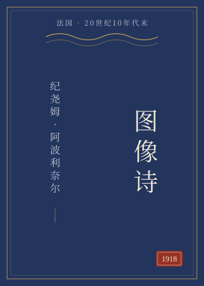
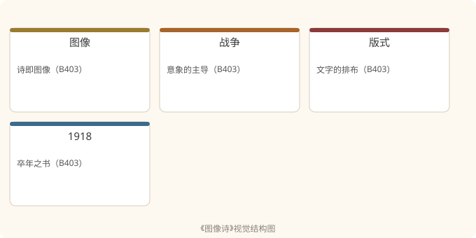

图像诗
一、基本信息
| 作者 | 纪尧姆·阿波利奈尔 |
|---|---|
| 成书/出版 | 1918年（Britannica B403：Calligrammes (1918)——'dominated by images of war'——诗即图像） Guillaume Apollinaire — Encyclopaedia Britannica（百科全书） |
| 国别/地区 | 法国 |
| 时代 | 近代 · 20世纪10年代末 |
| 体裁 | 诗集（视觉诗） |
| 语言 | 法语 |

《图像诗》视觉结构图（主题·结构图）
二、创作背景
Britannica（B403）：Calligrammes——'dominated by images of war'（战争意象主导）——诗即图像（版式排布）。
Britannica（B403）：阿波利奈尔——1918年11月9日卒于巴黎（西班牙流感）。
题材（通说待核）：'丽丽的雨'《哭泣的姑娘》等——战争与'图像'诗。
三、内容脉络
（通说待核）'图像诗'（calligram）：文字排布成'埃菲尔铁塔'等。
（通说待核）战争意象的主导（B403：dominated by images of war）。
四、主要人物表
| 人物 | 身份 | 说明 |
|---|---|---|
| 诗人-画工 | 版式实验者 | （B403 语境） |
五、主题与艺术特点
- '图像诗'：文字排布成图（B403：poems that are images via typographical arrangement）。
- 战争意象（B403：dominated by images of war）。
- '视觉'与'听觉'（通说待核）。
六、影响与评论
- Britannica：'poems that are images via typographical arrangement'（B403）。
Guillaume Apollinaire — Encyclopaedia Britannica（百科全书） - Britannica：'dominated by images of war'（B403）。
Guillaume Apollinaire — Encyclopaedia Britannica（百科全书）
七、阅读建议
难点
- 版式的'看'与'读'。
- 一战意象（通说待核）。
- 《图像诗》中译名（《画诗》）待核。
- 法文原版（公有领域状态待核）。
阿波利奈尔收官；与《醇酒集》对读。
八、待核实
- 篇目（《哭泣的姑娘》说——通说）核对。
- 1918年出版细节待核。
- 'calligram'术语核对。